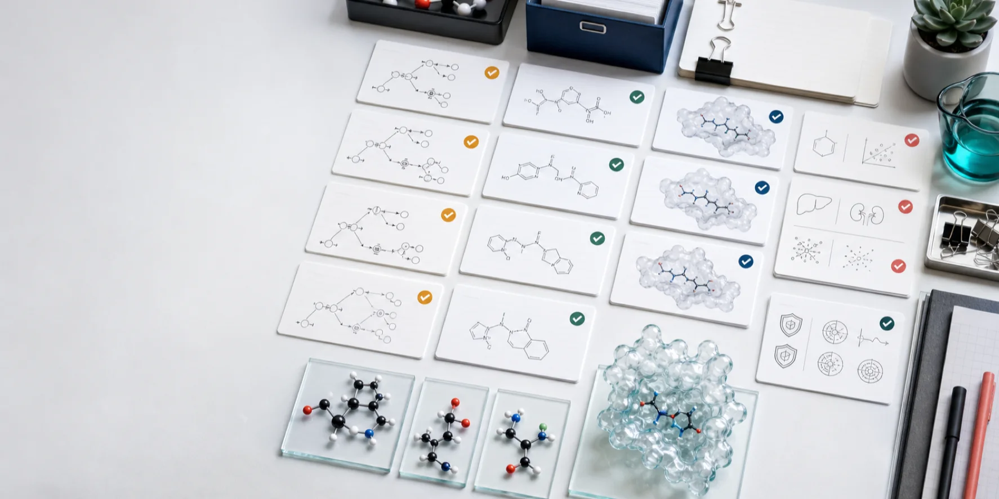
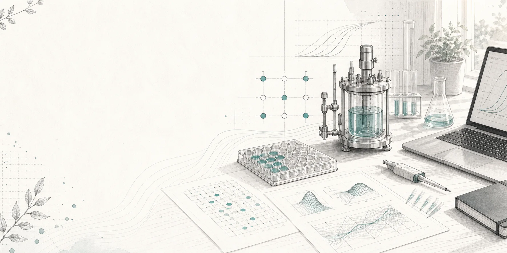

BioSymphony
AI agent tools for biological research.
BioProspector
Structural designStructure Factory

Small-molecule designSmall Molecules
Genome miningGeneCluster

Fermentation designFerm DoE
Structural biologyCryoCore
Related repos
Companion tools
Useful adjacent projects for cloud execution, protein-structure voice control, and structural biology agents.
Agent infrastructure
Symphony NeoCloud
Run agent workflows on cloud compute with preflight checks, cost caps, artifact receipts, and cleanup.
GitHub BioToolsBioVoice
Voice control for PyMOL, ChimeraX, AlphaFold, and Rosetta on the OpenAI Realtime API.
GitHub BioToolsProteus
Structural biology automation for AI coding agents across PyMOL, ChimeraX, AlphaFold, PDB, UniProt, and Rosetta.
GitHub